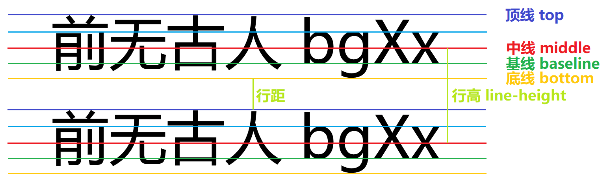

文本颜色 color
文本红色 color: red;
文本绿色 color: #00ff00; 或 #0f0
文本蓝色 color: rgb(0,0,255);
文本透明红 color: rgba(255, 0, 0, 0.3);
文本方向 direction
direction: ltr;
—— 文本从左到右
direction: rtl; 同时需要 unicode-bidi: bidi-override;
——文本从右到左
文本字符间距 letter-spacing
letter-spacing: 0px;——字符间距为默认
letter-spacing: 4px;——字符间距为正值
letter-spacing: -4px;——字符间距为负值
水平对齐 text-align
text-align: left;——向左对齐
text-align: center;——中间对齐
text-align: right;——向右对齐
设置行高 line-height
文本词间距 word-spacing
word-spacing: 0px; ——The word space is default
word-spacing: 6px; ——The word space is positive
word-spacing: -3px; ——The word space is negative
p.s. 中文无效
字母大小写 text-transform
text-transform: capitalize;——This sentence is capitalized.
text-transform: uppercase;——This sentence is uppercase.
text-transform: lowercase;——This sentence is lowercase.
文字阴影 text-shadow: h-shadow v-shadow blur color;
注意：h-shadow 和 v-shadow 必须，blur 和 color 可选。IE 9及更早版本的浏览器不支持 text-shadow 属性.text-shadow:2px 2px 8px #FF0000;——文字阴影
其他例子：
color:white; text-shadow:2px 2px 4px #000000;;——白色文字阴影
首行缩进 text-indent
text-indent: 20px;
——首行缩进绝对长度，首行缩进文本，首行缩进文本，首行缩进文本。
text-indent: 20%;
——首行缩进相对长度，首行缩进相对长度，首行缩进相对长度。
垂直对齐 vertical-align
注意：仅对行内元素、行内块元素、表格单元格元素生效，不能用来垂直对齐块级元素。[1],[2]
文本装饰 text-decoration
注意：text-decoration-line 和 text-decoration-color 大部分浏览器都不支持，因此请直接用 text-decorationtext-decoration-line: overline;——上方横线，默认没有横线
text-decoration-line: underline;——下方横线
text-decoration-line: line-through;——中间横线
text-decoration-color: red;——红色横线
text-decoration-style: solid;——实线，也是默认样式
text-decoration-style: double;——双实线
text-decoration-style: dotted;——点状线
text-decoration-style: dashed;——虚线
text-decoration-style: wavy;——波浪线
以上三种应该合并用 text-decoration 来声明，比如：
text-decoration: underline dashed red;——下方红色虚线
其他或特殊用法：
text-decoration: blink;——闪烁文本，但浏览器不会显示
text-decoration: none;——链接，可让链接无下划线
text-decoration: underline overline;——同时多线
空白符处理 white-space
white-space: normal;
——默认。这个句子中 的空白合并成一个空格。行尾空格删除。会自动换行。
white-space: nowrap;
——这个句子中 的空白合并成一个空格。行尾空格删除。不会自动换行。
white-space: pre;
——这个句子中 的空白全部保留，包括行尾 空白。不会自动换行。
white-space: pre-wrap;
——这个句子中 的空白全部保留，包括行尾 空白。会自动换行。
white-space: pre-line;
——这个句子中换行符保留，其余空白合并为一个空格，行尾 空白删除。会自动换行。
white-space: break-spaces;
——这个句子中的 空 白都会原样保留，过长句子在边界会自动换行
行尾空白会换行